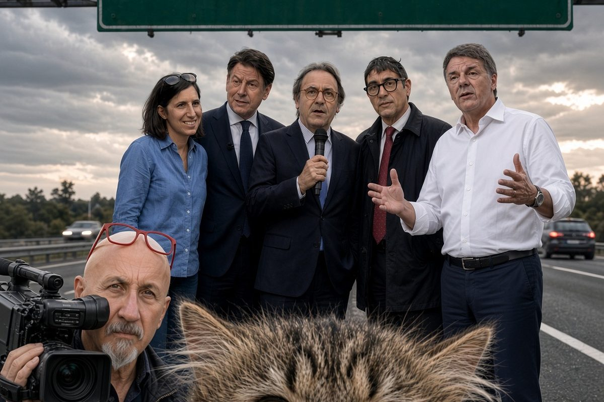

Politica italiana · 12 ottobre 2026
Di Maio avverte il campo largo: sull'Ucraina cadono i governi

Alla festa del Foglio, a Firenze, l'ex capo politico del Movimento 5 Stelle mette la coalizione davanti al primo voto europeo sugli aiuti militari a Kiev. Dal Movimento, finora, nessuna replica.
di Franco Zanghì
Alla festa del Foglio, a Firenze, il 10 ottobre, Luigi Di Maio ha messo davanti al campo largo la domanda che dentro quella coalizione nessuno vuole sentire: se andate al governo, al primo Consiglio europeo, quando arriva sul tavolo il nuovo pacchetto di aiuti a Kiev, armi comprese, cosa votate? Ponete il veto? Su queste cose, ha detto, cadono i governi, e ci si condanna di nuovo all'instabilità.
A dirlo è l'ex capo politico del Movimento 5 Stelle, oggi rappresentante speciale dell'Unione europea per il Golfo. Un uomo che quel Movimento lo ha guidato e che ne è uscito nel giugno 2022 proprio sull'Ucraina, quando il Movimento ha scelto la linea di Giuseppe Conte e lui si è ritrovato minoranza in casa propria. Lo ha ricordato con parole sue: la vera questione, ha detto, è quello che il Movimento pensa sull'Ucraina e sulla politica estera dell'Italia, lui non lo condivide, e se n'è andato anche per questo, anzi soprattutto per questo.
Lo scenario
Lo scenario che ha costruito è preciso. Un governo di centrosinistra arriva al primo Consiglio europeo. Sul tavolo c'è il nuovo pacchetto di finanziamento all'Ucraina, che comprende anche lo stanziamento militare. Quel ministro, quel leader, chiunque sia, cosa vota? E se non vota, pone il veto? Di Maio si è risposto da solo: su queste cose cadono i governi. Se c'è un diritto da garantire agli italiani alle prossime elezioni, ha aggiunto, è quello di avere coalizioni che stiano in piedi.
Sulla leadership ha detto che, se un compromesso non si trova, è giusto andare alle primarie, e che sarà interessante vedere le regole, perché da quelle nascerà l'identità della coalizione. Alla stessa festa, lo stesso giorno, Matteo Renzi ha detto che alle primarie voterebbe Elly Schlein e non Conte, e che senza i centristi il campo largo non vince.
Il voto che arriverà davvero
La domanda di Di Maio non è un'ipotesi di scuola. L'Unione europea ha già stanziato un prestito da 90 miliardi di euro per sostenere l'Ucraina nel biennio in corso e in quello che viene, di cui circa 60 destinati alla difesa, e il 7 ottobre la Commissione ha erogato oltre 1,2 miliardi per droni, sistemi antidrone e missili. Restano aperti il fabbisogno degli anni successivi e il nodo del prestito fondato sui beni russi immobilizzati. Quel voto, il prossimo governo italiano, se lo troverà davanti sul serio.
E su quel voto la coalizione, oggi, non ha una linea. A settembre Conte ha detto che il Movimento non sottoscriverà mai un programma che preveda di continuare a mandare armi, e il 10 ottobre, dal palco della festa del Manifesto, ha ripetuto che sull'Ucraina non è tutto bianco o nero e che bisogna capire anche le ragioni della controparte. Dallo stesso palco Schlein ha confermato il sostegno a Kiev. L'8 ottobre la Camera ha approvato in via definitiva la nuova legge elettorale, con 227 voti a favore e 164 contrari, e il premio di maggioranza scatta solo per chi supera il 42 per cento. Senza coalizione non si vince, e dentro la coalizione c'è una guerra su cui due alleati la pensano in modo opposto. Dal Movimento, a Di Maio, finora nessuna replica.
La mia posizione
Questo campo largo sta andando allo sbaraglio come l'Armata Brancaleone: si discute di primarie, di regole, di chi tiene il bastone del comando, e il nodo vero non è stato nemmeno affrontato. Se n'è accorto perfino Di Maio, che da quel Movimento è uscito quattro anni fa sullo stesso punto, e non è poco. Se per disgrazia dovessero vincere le elezioni, quel governo durerebbe quanto un gatto in tangenziale.
Fonti
- Il Foglio, la festa dell'Ottimismo a Firenze, 10 ottobre 2026
- Libero Quotidiano, «Su queste cose cadono i governi»
- Adnkronos, primarie e nodo Ucraina fra Movimento 5 Stelle e Partito Democratico
- Commissione europea, erogazione di 1,24 miliardi all'Ucraina per droni e missili, 7 ottobre 2026
- il Fatto Quotidiano, resoconto della festa del Foglio, 12 ottobre 2026